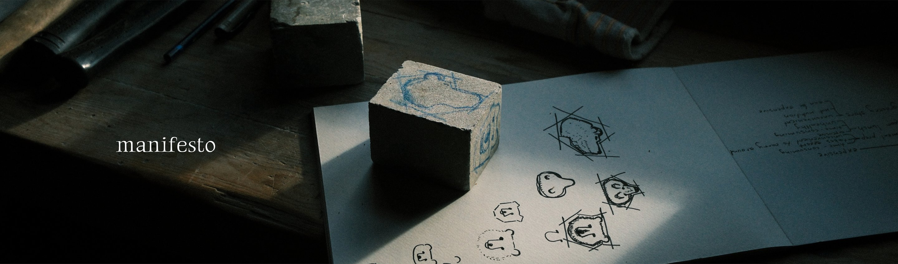
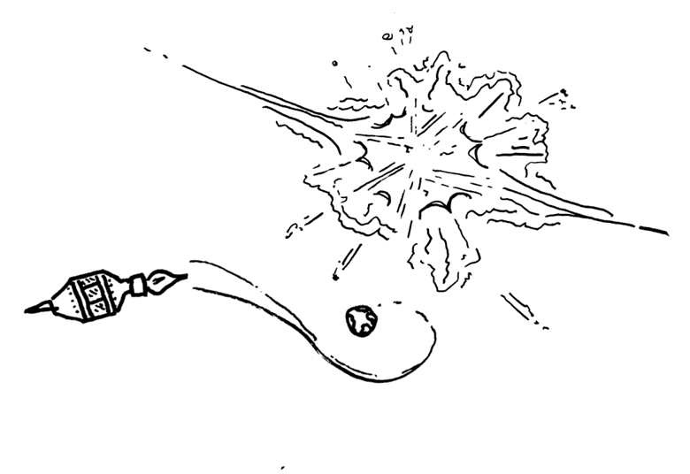

“The word "real" primarily means existing in fact, genuine, or not
imaginary. It comes from the Latin word res, meaning "thing".
What do we believe in?
1.Humans have always functioned as a pack. A pack wins
together when everybody puts effort towards a mutual goal. For a
pack to become strong it is necessary to face challenges together.
2.Inside a pack, everyone has their own specialties based on
what needs to be achieved, and no specialty is superior to one
another.
3.We become what we consume. The environment we spend our
time in, the food we eat, the social relationships we immerse
ourselves in.
“...and at the time when the sun exploded and the last
starships left the earth, simpleman always stayed real,
was non-negotiable about the nutrition it brought and
always served genuine people doing important work.”
-Someone, the future
